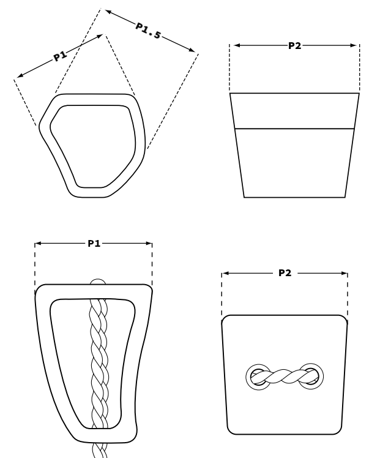

The majority of cam manufacturers will show consumers the expansion range of a cam. This however does not translate the the usable range of the cam. On the outer ends of the expansion range you risk either welding the cam or leaving it tipped-out; which is prone to walking, a lower friction coefficient, and failure in special cases. The usable range of a cam is referred to as the operation range, this removes 10% from the minimum and 25% from the maximum ends of the expansion range. The percentage reduction for each type of gear is as follows:
Passive protection is measured from the widest point, take this into account when comparing to active protection. Also remember some nuts taper more than others, which may can more or less suitable depending on the rock type. Nuts are made up of two possible positions (P1, P2), while hexes have three (P1, P1.5, P2).
For passive protection if P1 and P2 have the same strength rating then a single rating will be present on the far right. Otherwise P1 will have it's own strength value to it's immediate right (take a look at black diamond stoppers for example).
Active gear will use a slash rating as such: [active_kn]/[passive_kn]. If the protection is not capable of a passive position, an 'X' will be used. If active and passive are the same rating, a single value is shown.